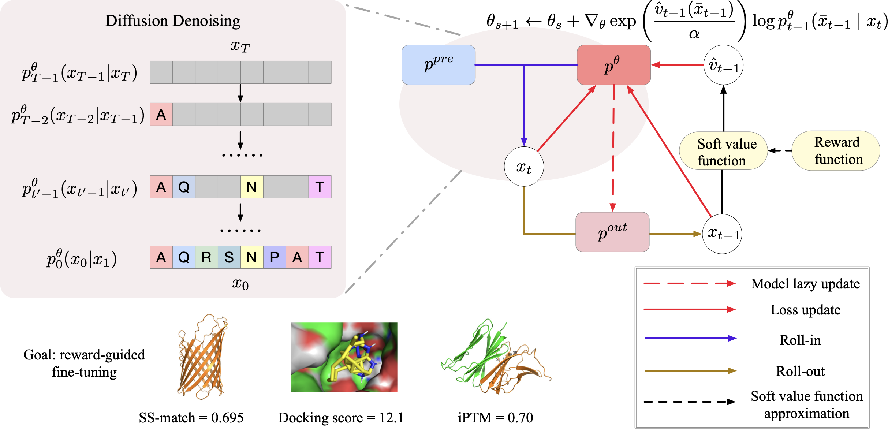
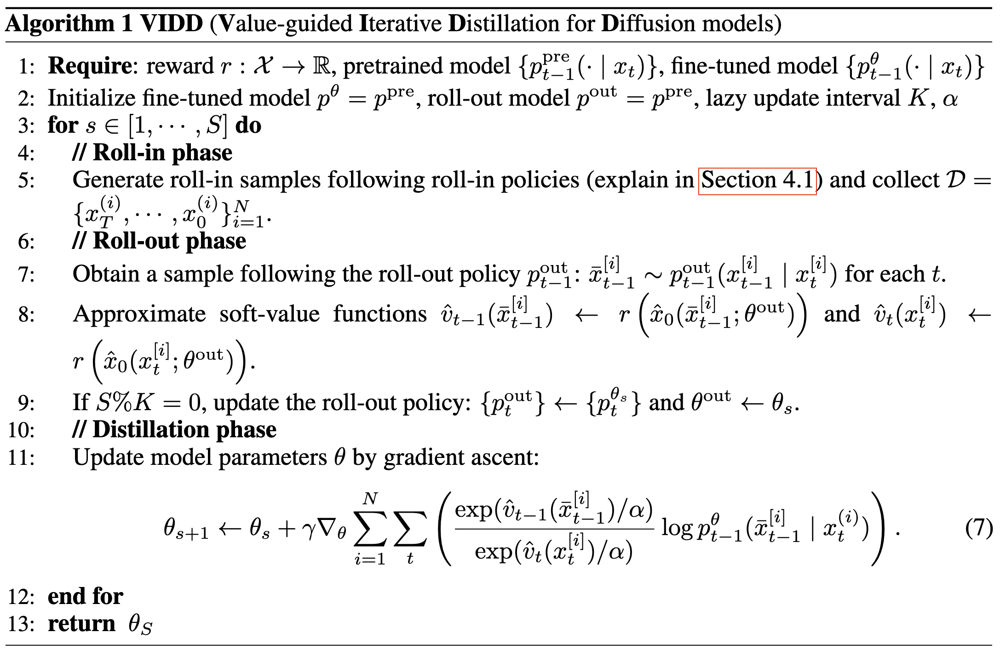
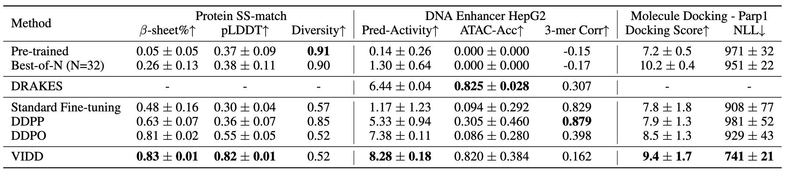
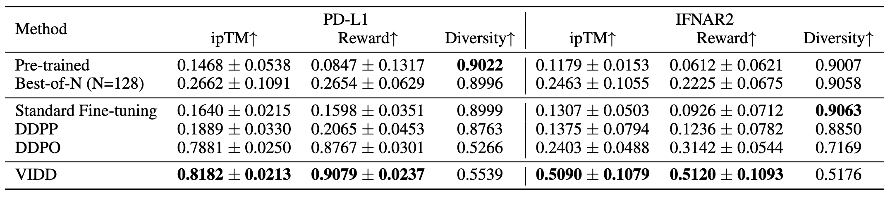
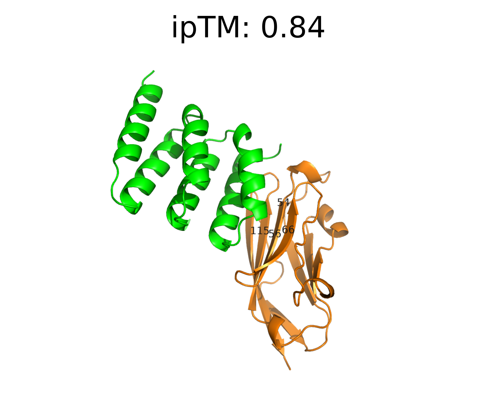
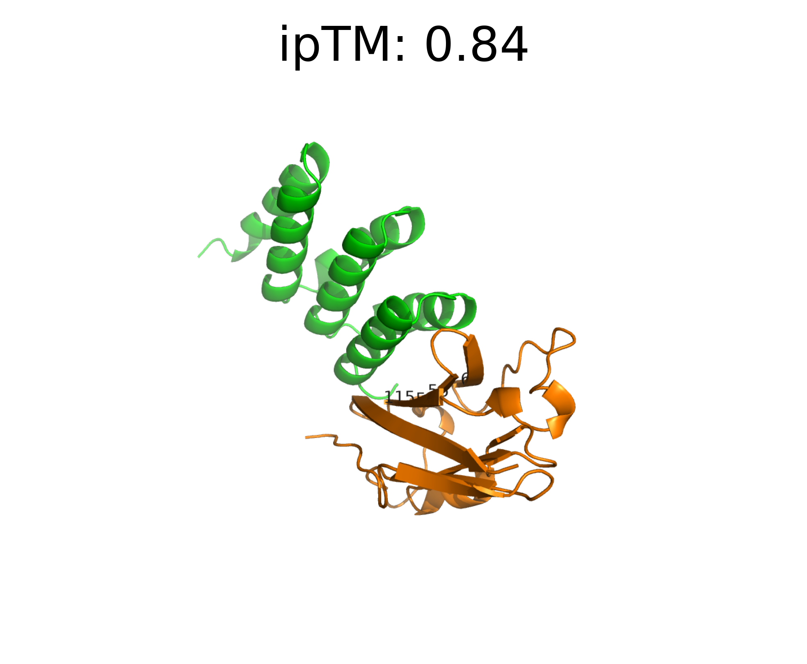
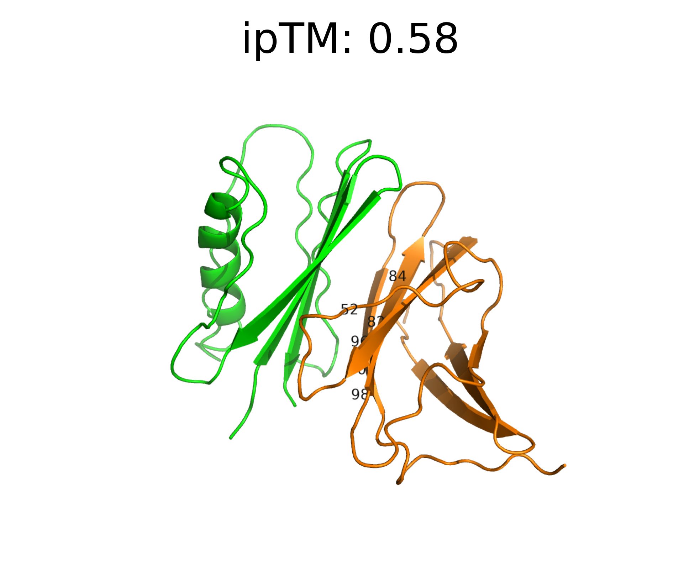
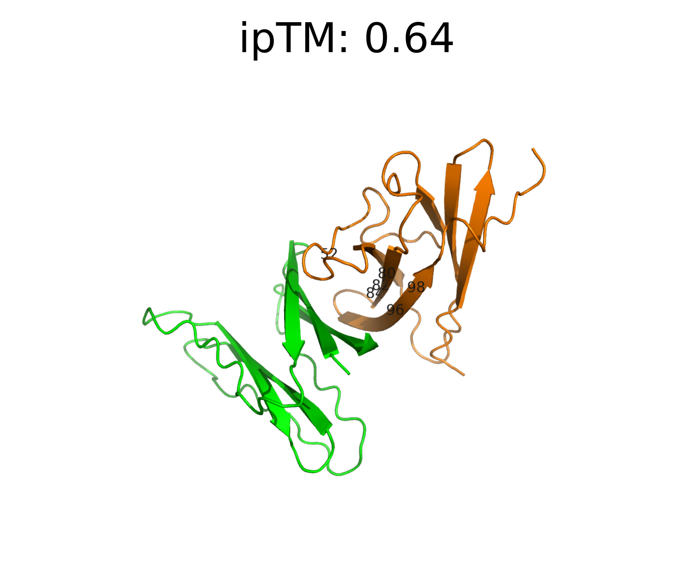
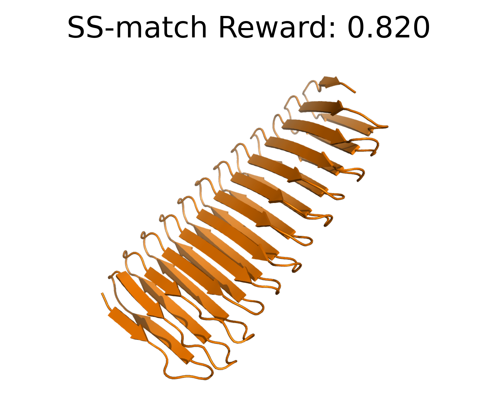
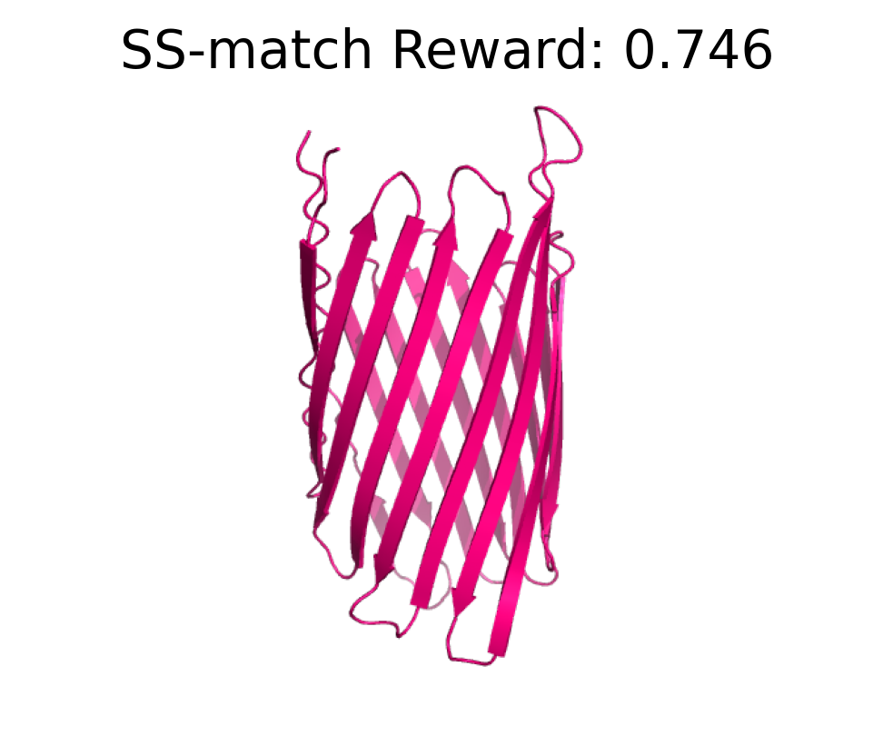

We address the problem of fine-tuning diffusion models for reward-guided generation in biomolecular design. While diffusion models have proven highly effective in modeling complex, high-dimensional data distributions, real-world applications often demand more than high-fidelity generation, requiring optimization with respect to potentially non-differentiable reward functions such as physics-based simulation or rewards based on scientific knowledge. Although RL methods have been explored to fine-tune diffusion models for such objectives, they often suffer from instability, low sample efficiency, and mode collapse due to their on-policy nature.
In this work, we propose an iterative distillation-based fine-tuning framework that enables diffusion models to optimize for arbitrary reward functions. Our method casts the problem as policy distillation: it collects off-policy data during the roll-in phase, simulates reward-based soft-optimal policies during roll-out, and updates the model by minimizing the KL divergence between the simulated soft-optimal policy and the current model policy. Our off-policy formulation, combined with KL divergence minimization, enhances training stability and sample efficiency compared to existing RL-based methods. Empirical results demonstrate the effectiveness and superior reward optimization of our approach across diverse tasks in protein, small molecule, and regulatory DNA design.

Figure 1: Overview of VIDD. VIDD fine-tunes diffusion models to maximize potentially non-differentiable rewards by iteratively distilling soft-optimal denoising policies. It alternates between (1) off-policy roll-in, (2) value-guided reward-weighted roll-out, and (3) forward KL-based model updates. Our algorithm leverages off-policy roll-ins and forward KL minimization, which contribute to improved optimization stability.
VIDD (Value-guided Iterative Distillation for Diffusion models) is designed to maximize possibly non-differentiable downstream reward functions in diffusion models in a stable and sample-efficient manner. The core idea is to iteratively distill soft-optimal policies—teacher denoising processes that optimize the reward while remaining close to the current fine-tuned model. Unlike PPO-based approaches (DDPO), which are on-policy and minimize reverse KL divergence (leading to mode-seeking behavior and potential mode collapse), VIDD supports off-policy updates and optimizes forward KL divergence, contributing to more stable and effective fine-tuning.

Algorithm 1: VIDD (Value-guided Iterative Distillation for Diffusion models). Each training iteration consists of three key components: (1) roll-in—collecting off-policy training data using a mixture strategy that balances exploration and exploitation; (2) roll-out—approximating the teacher policy by sampling from a periodically updated roll-out policy and computing soft value functions; and (3) distillation—updating the model via a value-weighted maximum likelihood objective.
We evaluate VIDD across diverse biomolecular design tasks: protein secondary structure matching (β-sheet), protein binder design (PD-L1 and IFNAR2), regulatory DNA enhancer design (HepG2), and small molecule docking optimization (Parp1). VIDD consistently achieves the highest rewards among all fine-tuning baselines.

Table 1: Performance of different methods on protein, DNA, and molecular generation tasks w.r.t. rewards and naturalness. The best result among fine-tuning baselines is highlighted in bold. We report the 50% quantile of the metric distribution. The ± specifies the standard error of the estimate quantile with 95% confidence interval.

Table 2: Performance of different methods on protein binding design tasks w.r.t. ipTM, optimized reward, and diversity. The best result is highlighted in bold.
Predicted protein structures for the PD-L1 binding design task. The designed binder protein is shown in green and the target protein PD-L1 is in orange, with hotspot residues labeled on the structure.


Predicted protein structures for the IFNAR2 binding design task. The designed binder protein is shown in green and the target protein IFNAR2 is in orange, with hotspot residues labeled on the structure.


Predicted protein structures for the secondary structure matching (β-sheet) task. VIDD successfully generates proteins with high β-sheet content, demonstrating its ability to optimize non-differentiable structural rewards. The visualizations show the β-sheet-rich structures generated by our method.


@article{su2025iterative,
title={Iterative Distillation for Reward-Guided Fine-Tuning of Diffusion Models in Biomolecular Design},
author={Su, Xingyu and Li, Xiner and Uehara, Masatoshi and Kim, Sunwoo and Zhao, Yulai and Scalia, Gabriele and Hajiramezanali, Ehsan and Biancalani, Tommaso and Zhi, Degui and Ji, Shuiwang},
journal={arXiv preprint arXiv:2507.00445},
year={2025}
}